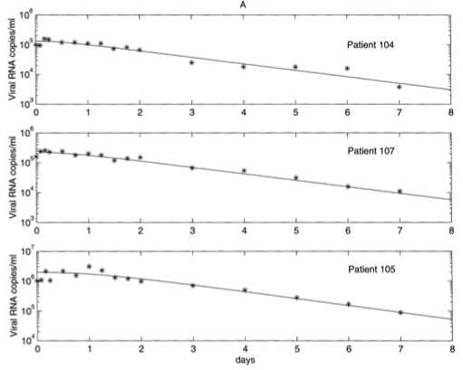

9 - A within-host HIV model ¶
Case study: HIV¶
Human immunodeficiency virus (HIV) infects immune cells called ‘CD4\(^+\) T-cells’, which form an important part of the human immune system. HIV enters these T-cells, begins to replicate and then releases new virus particles in to the bloodstream. Immediately after infection, the virus grows rapidly and produces flu-like symptoms in the patient. After a few months, these symptoms disappear and the virus concentration reduces to a lower, but steady, level. This ‘asymptomatic period’ can last for years, with the virus density staying roughly constant, and the concentration of T-cells very slowly dropping. Eventually, the T-cell density becomes so low that the patient’s immune system is no longer effective, a condition called aquired immunodeficiency syndrome (AIDS). The patient is then at risk from life-threatening opportunistic infections. In the mid-1990s, much work was being done to explore the dynamics of HIV and to produce potential treatments, including the development of mathematical models led by Perelson and Nelson.
A (pre-treatment) model¶
As with the epidemic models, let’s start by establishing our variables and drawing a schematic of what is happening in this system. The variables that we want to keep track of (before treatment, at least), are:
Healthy T-cells (\(T\))
Infected T-cells (\(T^*\))
Virus particles (\(V\))
We will only keep track of the concentration of virus particles in the bloodstream, not the ‘intracellular’ concentrations. Our schematic should look like this:
Healthy T-cells are produced at some constant rate \(s\) by the body, but also decay at some rate \(d\). These healthy cells become infected through contact with virus, in a mass-action manner, with coefficient \(k\). These infected T-cells then decay at some rate \(\delta\). New virus particles are produced when infected T-cells die, with \(N\) giving the average number of virus particles produced by each cell. The virus then also decays at some rate \(c\). The system can therefore be expressed with the following set of ODEs:
It is easy to see that there is an HIV-free equilibrium for \((T,T^*,V)=(s/d,0,0)\). We have not covered how to assess stability in a three-dimensional system in this module. In fact, the trace-determinant conditions we have used in previous models are a special case of stability criteria called \textbf{Routh-Hurwitz} conditions. We will not cover these here, but using them we can find that the HIV-free equilibrium is stable if \(c>kNs/d\). In other words, the decay rate of the virus must be high, and the infection rate and production rate (i.e. \(N\)) must be low.
Of course, when a patient is to undergo treatment, they will not be HIV-free! We are therefore more interested in the pre-treatment infected steady-state. Setting the equations for \(dT^*/dt\) and \(dV/dt\) to zero, yields,
Solving dT/dt=0, then gives,
and, by substituting back in,
Treatment¶
Assume a patient arrives with their virus and T-cell concentrations at the pre-treatment steady state. We then wish to put them on a course of treatment. One of the most effective early treatments for HIV was using ‘protease inhibitors’. These drugs did not prevent infection, but meant that any new virus produced inside infected T-cells were non-infectious. The system therefore becomes:
In the early stages of treatment, it is reasonable for us to assume that the number of healthy T-cells stays roughly constant at it’s pre-treatment level \(T(t)=T_0\), so dT/dt can be ignored. We also know that before treatment, all virus particles were of the infective type, such that \(V_I(0)=V_0\) and \(V_{NI}(0)=0\). Given this, it is easy to show that,
Given that \(T(t)=T_0\), we now find we have a linear equation,
This can be solved using the standard method of an integrating factor:
Have a go
Using similar methods show that,
This can be added to the soluion for \(V_I(t)\) to find the overall density of virus particles in the bloodstream at any time point after treatment has begun. After estimating the values of each of the model parameters, Perelson and his colleagues plotted the model’s predictions against data of individual patient’s virus concentrations. The figure below shows that the model provides a remarkably good fit.
Figure: Virus concentrations in the bloodstream of three patients compared to the model predictions. Taken from Perelson & Nelson (1999).
3 key points¶
A patient will only be disease-free if the virus decay rate is high, and its infection rate and urst size is low.
Under a simplifying assumption the treatment model becomes linear, so we can solve the model explicitly.
The treatment model predicts exponential decay of the virus, and matches well to real data.